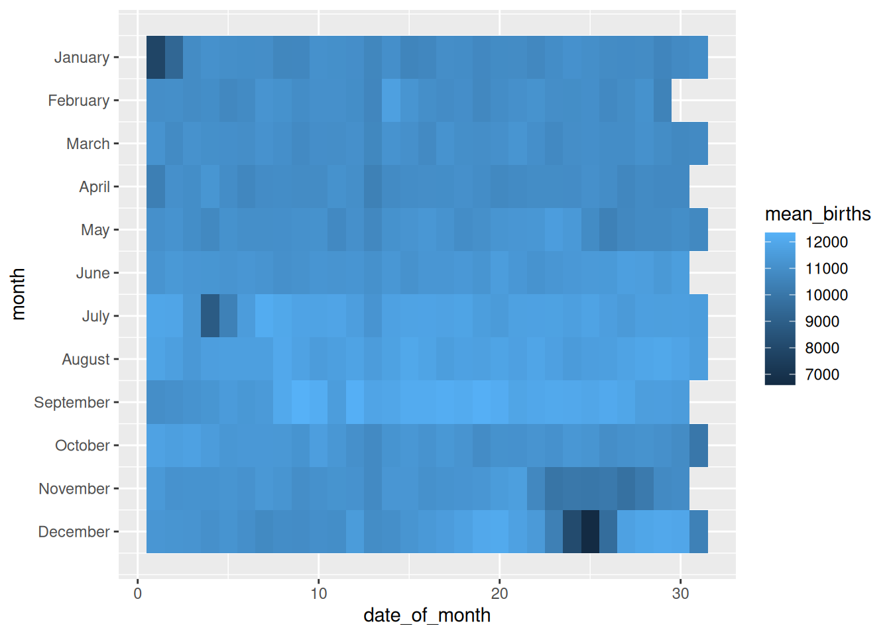
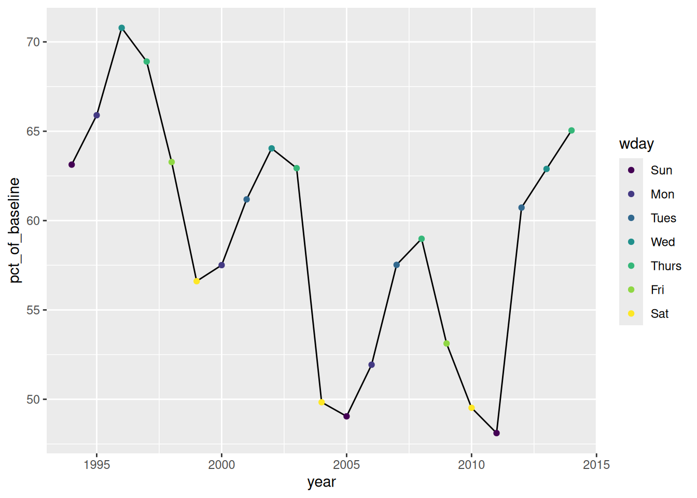
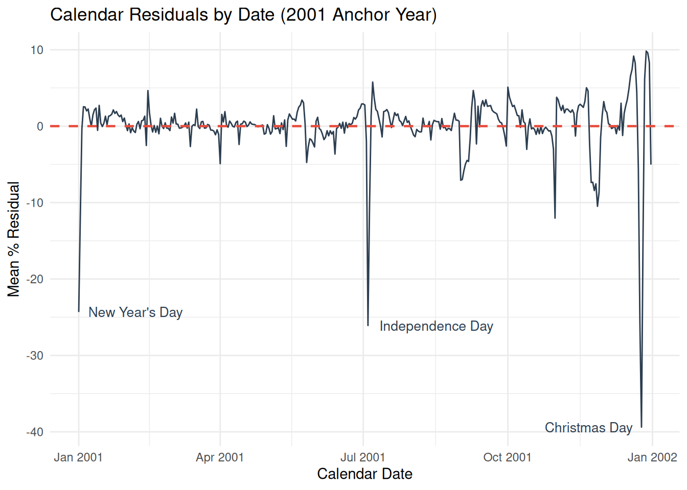
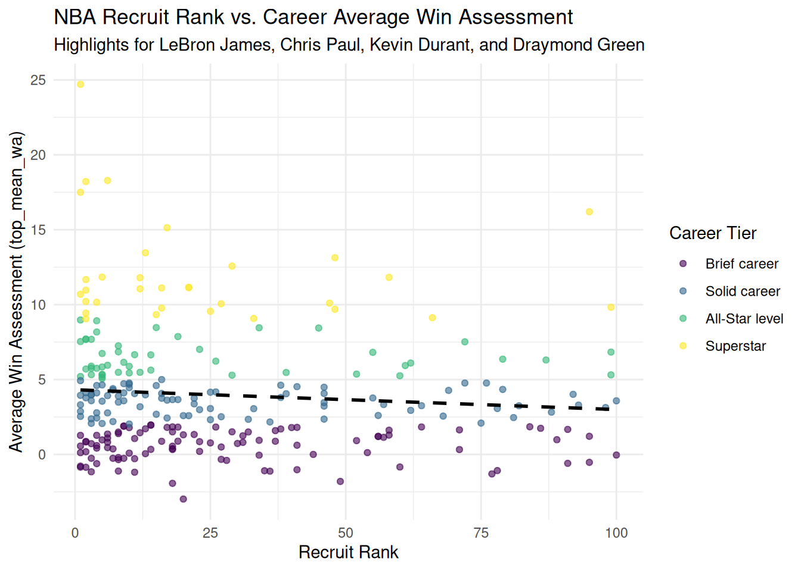

library(tidyverse)
library(readxl)
births_tibble <- read_excel("data/us_births_1994_2014.xlsx") |>
mutate(day_of_week = factor(day_of_week,
levels = c("Sun", "Mon", "Tues", "Wed", "Thurs", "Fri", "Sat"),
ordered = TRUE))Analyzing US Births and Basketball Recruits
library(tidyverse)
births_tibble |>
group_by(month, date_of_month) |>
summarize(mean_births = mean(births, na.rm = TRUE), .groups = "drop") |>
ggplot(aes(x = date_of_month, y = month, fill = mean_births)) +
geom_tile() +
scale_y_reverse(breaks = 1:12, labels = month.name)
library(tidyverse)
christmas_data <- births_tibble |>
filter(month == 12) |>
group_by(year) |>
summarize(
dec_25 = sum(births[date_of_month == 25]),
baseline = mean(births[date_of_month %in% c(20:24, 27:30)]),
pct_of_baseline = (dec_25 / baseline) * 100,
wday = day_of_week[date_of_month == 25],
.groups = "drop"
)
summary(christmas_data) year dec_25 baseline pct_of_baseline wday
Min. :1994 Min. :5728 Min. :10019 Min. :48.11 Sun :3
1st Qu.:1999 1st Qu.:6325 1st Qu.:10578 1st Qu.:53.12 Mon :3
Median :2004 Median :6624 Median :11094 Median :60.73 Tues :3
Mean :2004 Mean :6601 Mean :11252 Mean :59.10 Wed :3
3rd Qu.:2009 3rd Qu.:6774 3rd Qu.:11790 3rd Qu.:63.28 Thurs:4
Max. :2014 Max. :7192 Max. :12690 Max. :70.79 Fri :2
Sat :3 library(tidyverse)
christmas_data |>
ggplot(aes(x = year, y = pct_of_baseline)) +
geom_line() +
geom_point(aes(color = wday))
library(tidyverse)
births_model <- lm(births ~ factor(year) + factor(month) + day_of_week, data = births_tibble)
summary(births_model)$r.squared[1] 0.8777789library(tidyverse)
births_adjusted <- births_tibble |>
mutate(pct_resid = (residuals(births_model) / mean(births)) * 100)library(tidyverse)
calendar_resid <- births_adjusted |>
filter(month != 2 | date_of_month != 29) |>
group_by(month, date_of_month) |>
summarize(mean_pct_resid = mean(pct_resid), .groups = "drop") |>
mutate(calendar_date = make_date(2001, month, date_of_month))library(tidyverse)
ggplot(calendar_resid, aes(x = calendar_date, y = mean_pct_resid)) +
geom_line(color = "#2c3e50") +
geom_hline(yintercept = 0, linetype = "dashed", color = "#e74c3c", linewidth = 0.8) +
annotate("text", x = as.Date("2001-12-25"), y = -39.4, label = "Christmas Day", hjust = 1.1, vjust = 0.5, color = "#2c3e50", size = 3.5) +
annotate("text", x = as.Date("2001-07-04"), y = -26.1, label = "Independence Day", hjust = -0.1, vjust = 0.5, color = "#2c3e50", size = 3.5) +
annotate("text", x = as.Date("2001-01-01"), y = -24.3, label = "New Year's Day", hjust = -0.1, vjust = 0.5, color = "#2c3e50", size = 3.5) +
theme_minimal() +
labs(
title = "Calendar Residuals by Date (2001 Anchor Year)",
x = "Calendar Date",
y = "Mean % Residual"
)
library(tidyverse)
library(readxl)
read_excel("data/nba_recruits.xlsx") |>
glimpse()Rows: 1,873
Columns: 10
$ name <chr> "Al Harrington", "Rashard Lewis", "Korleone Young", "Dan…
$ rank <dbl> 1, 2, 3, 4, 5, 6, 7, 8, 9, 10, 11, 12, 13, 14, 14, 16, 1…
$ recruit_year <dbl> 1998, 1998, 1998, 1998, 1998, 1998, 1998, 1998, 1998, 19…
$ college <chr> NA, NA, NA, "University of California, Los Angeles", "Lo…
$ drafted <lgl> TRUE, TRUE, TRUE, TRUE, TRUE, FALSE, FALSE, TRUE, TRUE, …
$ recruit_group <chr> "#1–10", "#1–10", "#1–10", "#1–10", "#1–10", "#1–10", "#…
$ nba_mean_ws48 <dbl> 0.07390909, 0.13525000, NA, 0.14000000, 0.12450000, NA, …
$ top_mean_wa <dbl> 3.946000, 11.672000, NA, 4.600000, 0.970000, NA, NA, 3.8…
$ total_seasons <dbl> 16, 16, 1, 10, 9, NA, NA, 13, 13, NA, 1, 14, 17, NA, NA,…
$ tier <chr> "Solid career", "Superstar", "Brief career", "Solid care…library(tidyverse)
library(readxl)
read_excel("data/nba_recruits.xlsx") |>
select(rank, nba_mean_ws48, top_mean_wa, total_seasons, drafted) |>
summary() rank nba_mean_ws48 top_mean_wa total_seasons
Min. : 1.00 Min. :-0.03000 Min. :-2.980 Min. : 0.000
1st Qu.: 25.00 1st Qu.: 0.07000 1st Qu.: 0.970 1st Qu.: 1.000
Median : 50.00 Median : 0.09200 Median : 2.990 Median : 4.000
Mean : 50.19 Mean : 0.09622 Mean : 3.746 Mean : 5.071
3rd Qu.: 75.00 3rd Qu.: 0.12050 3rd Qu.: 5.364 3rd Qu.: 8.000
Max. :100.00 Max. : 0.25046 Max. :24.708 Max. :18.000
NA's :338 NA's :1504 NA's :1504 NA's :940
drafted
Mode :logical
FALSE:1255
TRUE :618
library(tidyverse)
library(readxl)
read_excel("data/nba_recruits.xlsx") |>
count(tier)# A tibble: 5 × 2
tier n
<chr> <int>
1 All-Star level 66
2 Brief career 640
3 Never played 1014
4 Solid career 113
5 Superstar 40library(tidyverse)
library(readxl)
basketball_tibble <- read_excel("data/nba_recruits.xlsx") |>
mutate(tier = factor(tier,
levels = c("Never played", "Brief career", "Solid career", "All-Star level", "Superstar"),
ordered = TRUE)) |>
mutate(recruit_group = factor(recruit_group,
levels = c("#1–10", "#11–25", "#26–50", "#51–100", "Outside top 100"),
ordered = TRUE))library(tidyverse)
basketball_tibble |>
count(recruit_group)# A tibble: 5 × 2
recruit_group n
<ord> <int>
1 #1–10 158
2 #11–25 232
3 #26–50 382
4 #51–100 763
5 Outside top 100 338library(tidyverse)
basketball_tibble |>
filter(!is.na(rank) & !is.na(top_mean_wa)) |>
mutate(label = ifelse(name %in% c("LeBron James", "Chris Paul", "Kevin Durant", "Draymond Green"), name, "")) |>
ggplot(aes(x = rank, y = top_mean_wa)) +
geom_point(aes(color = tier), alpha = 0.6) +
geom_smooth(method = "lm", color = "black", linetype = "dashed", se = FALSE) +
geom_text(aes(label = label), vjust = -0.5, hjust = 0.5, size = 3, show.legend = FALSE, check_overlap = TRUE) +
labs(
title = "NBA Recruit Rank vs. Career Average Win Assessment",
subtitle = "Highlights for LeBron James, Chris Paul, Kevin Durant, and Draymond Green",
x = "Recruit Rank",
y = "Average Win Assessment (top_mean_wa)",
color = "Career Tier"
) +
theme_minimal()